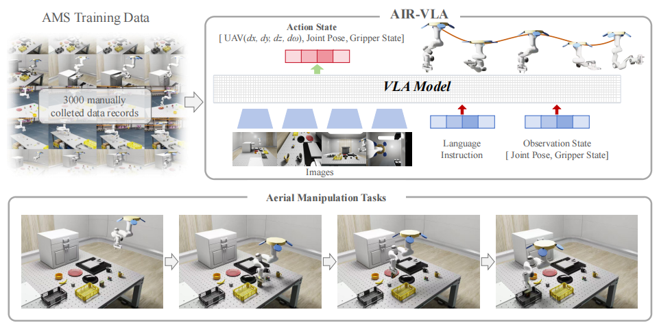
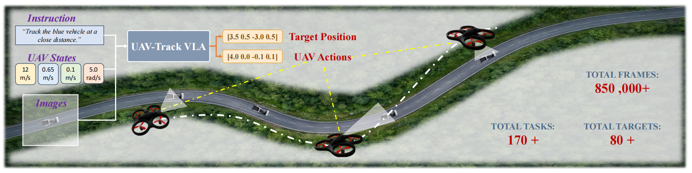
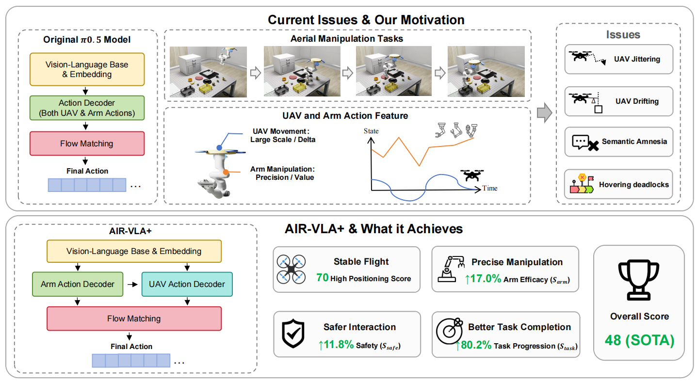

Vision-Language-Action Models
Multimodal policies that translate visual observations and language instructions into continuous robot actions.
Robotics · Embodied AI · Aerial Systems
M.Eng. student in Artificial Intelligence
Institute of Automation, Chinese Academy of Sciences
I work on end-to-end robotic learning, with a focus on vision-language-action and world-action models for aerial robots and mobile manipulation. My research explores how embodied agents can connect multimodal understanding with stable, continuous control.
01 / Focus
Multimodal policies that translate visual observations and language instructions into continuous robot actions.
Learning predictive representations that connect environment dynamics, action generation, and long-horizon behavior.
End-to-end control for UAV tracking, aerial manipulation, and composite robotic systems.
02 / Background
M.Eng. in Artificial Intelligence
B.Eng. in Vehicle Engineering (Automotive Engineering)
GPA: 4.81/5.00 · Top 2% in rank
Graduate research with Prof. Bin Tian and Prof. Yonglin Tian, Institute of Automation, CAS.
Undergraduate research internship with Prof. Quan Zhou, Tongji University.
Undergraduate research internship with Prof. Xingyi Zhu, Tongji University.
Undergraduate research internship with Prof. Lu Xiong, Tongji University.
03 / Selected Work
My name is highlighted in the author lists.

A benchmark for aerial manipulation with a physics-based simulation environment and 3,000 manually teleoperated multimodal demonstrations, spanning manipulation, spatial understanding, semantic reasoning, and long-horizon planning.

Introduces an embodied UAV tracking benchmark and a VLA policy with temporal compression, spatial grounding, and flow-matching action generation for instruction-conditioned continuous flight control.

Decouples UAV movement from arm manipulation through cascaded dual-action decoders and an asymmetric feature-level mixture of experts, improving coordinated aerial manipulation on the AIR-VLA benchmark.
04 / Service & Recognition